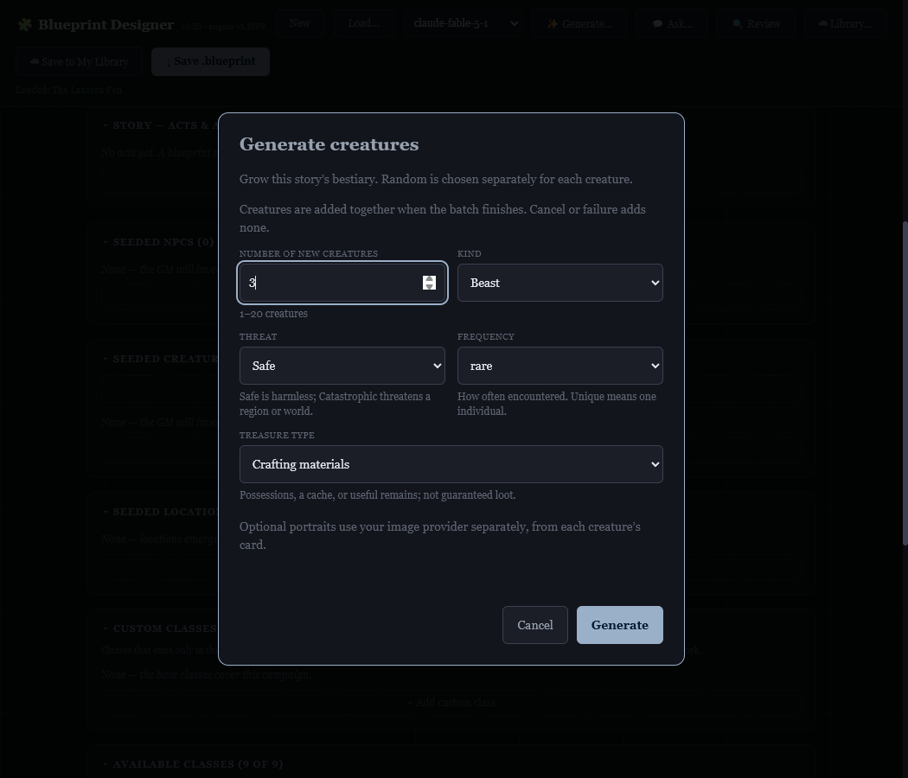
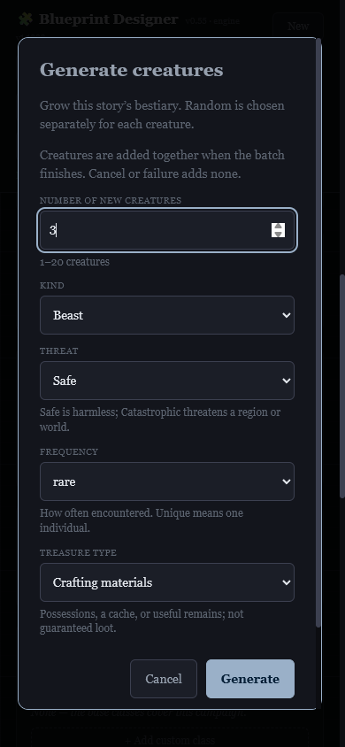
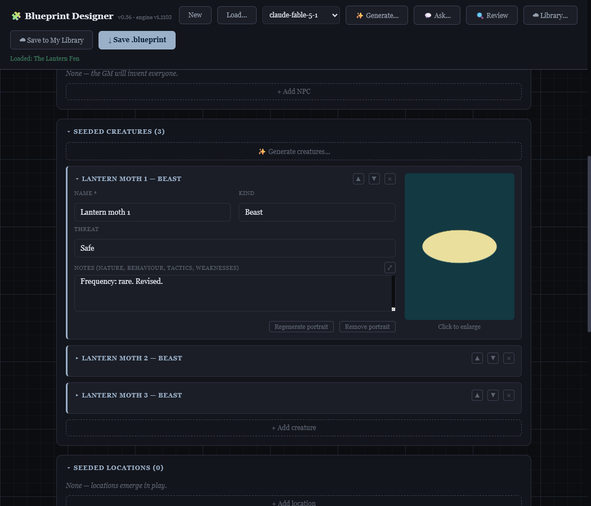
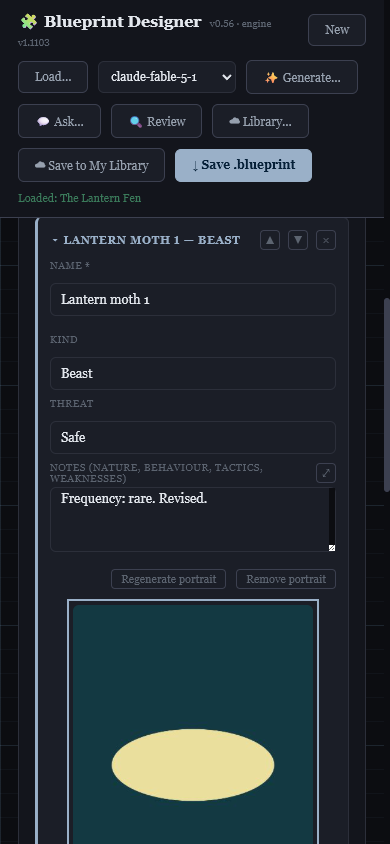
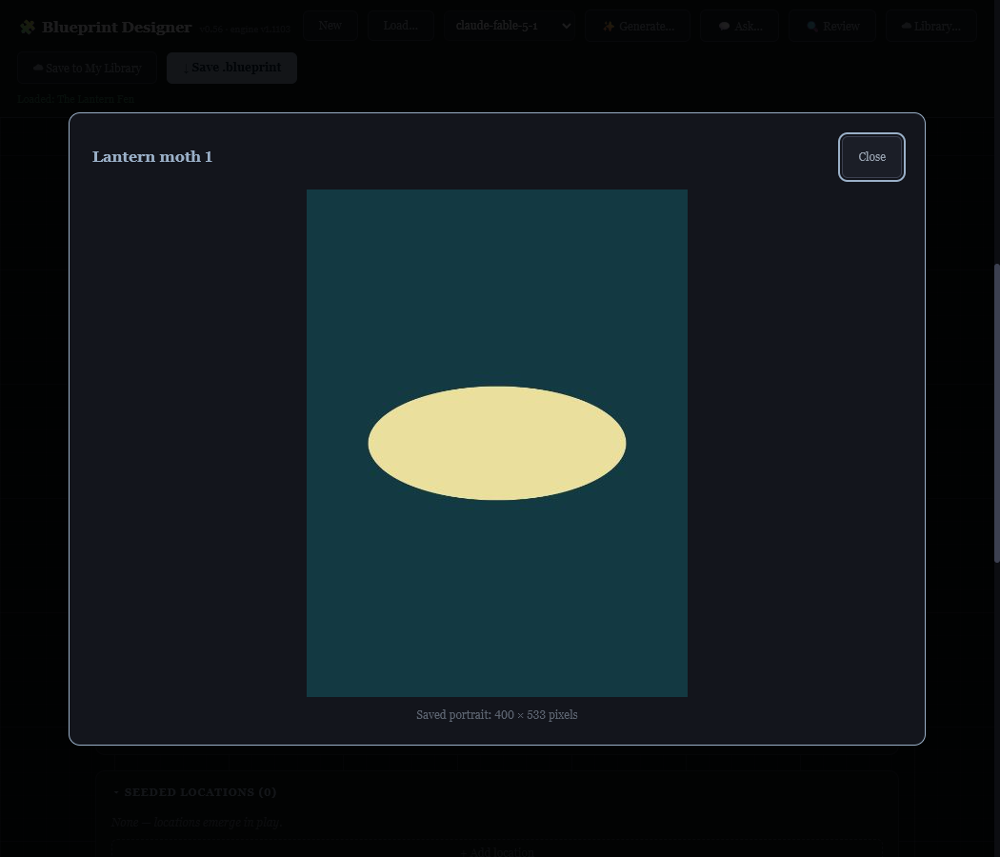
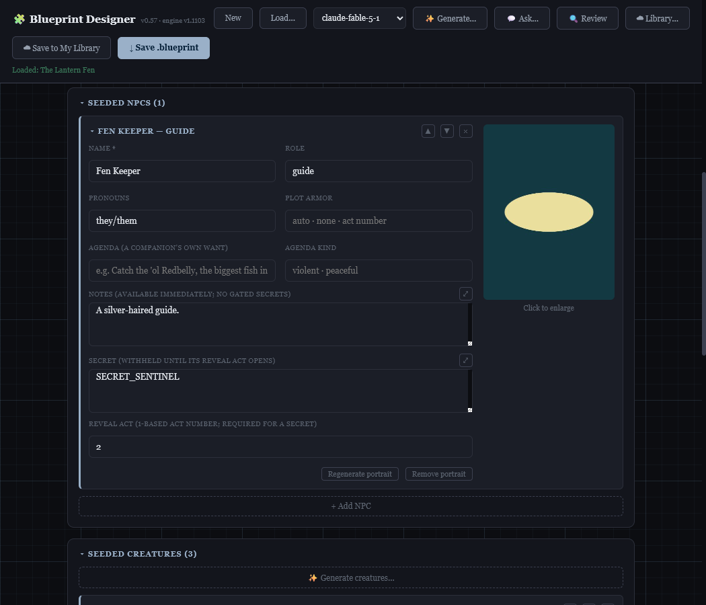
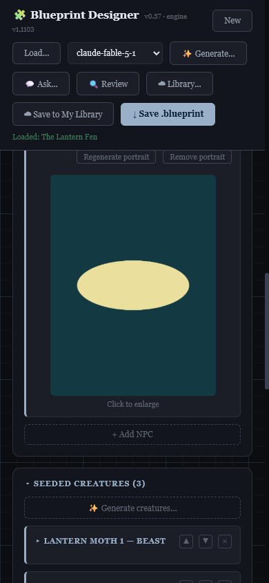

Blueprint Designer v0.55 · 2026-10-01 · task #508
The owner asked for a configurable creature batch, optional per-creature portraits, a Treasure type dropdown, then a player-panel review and judged adjustments. This review applies the repository’s five sourced composite personas. It is a design review, not interviews or usability research. Three independent review passes covered all five personas. Their documented positions are cited below; recommendations for this authoring tool are our inferences from those positions.
Clicking Generate creatures opens a modal. Count is an integer from 1 to 20, default 1. Kind, Threat and Frequency each offer Random; Treasure type defaults to None and also offers Random. Random choices are sampled independently for every creature. A sequential batch creates story-specific entries and adds them together after all responses validate. Each creature has its own Generate/Regenerate/Remove portrait controls. Images are compressed and embedded in the blueprint.
Treasure choices: None, Coins & valuables, Trade goods, Equipment, Salvage, Crafting materials, Magic items, Relics, Mixed hoard, Random. These are descriptive categories, not gold values or a new loot subsystem.
| Persona and source | Feedback inferred from the source | Judgment and adjustment |
|---|---|---|
| Ines Halloran — I1, I5, I6, I9 | Defined world truths and authorship matter more than unconstrained randomness. The original creature context omitted hard rules and established details. A drawing could attach after its creature’s text changed. | Accepted. Generation now sees campaign rules, NPC notes, location descriptions, and existing bestiary notes. Incompatible choices must produce a visible explanation instead of silently violating canon. Portrait completion compares name, kind, threat and notes with the request snapshot; edits preserve the prior image and report the mismatch. |
| Gerry Fulmer — G6, G7 | Specific canon and clear ownership of mechanics matter. Pack, Safe/Catastrophic, Unique, and Treasure need understandable meanings; generation should not invent numeric mechanics. | Accepted. Short field help explains those terms. Pack help appears when selected. Frequency and Treasure travel in notes, which the existing game reads. The prompt forbids numeric combat stats, gold values, and invented mechanical rewards. No engine or loot-system changes. |
| Bert Kovac — B5, B8, B9 | Persistence and resource expectations should be explicit. Batch cancellation/failure discards the new batch; treasure is not guaranteed loot. Embedded portraits make silent draft-storage failures more consequential. | Accepted. The modal explains atomic completion and treasure semantics. Backdrop clicks do not cancel. Portrait copy says it uses the image provider separately and recommends saving a portable file. Draft-storage failures now name the reason and direct the author to Save .blueprint. Existing portraits survive text fixes and unsuccessful regeneration. |
| Nan Oyelaran — N2, N5, N6 | Short sessions need understandable completion. Visible selections should not change while a request is running. Phone controls could be easier to read and touch. | Accepted as an authoring inference. Inputs lock while generating; progress names the creature number; Cancel remains available. Inputs and buttons have a 44px minimum height, help uses normal sentence case, the phone layout stacks fields, and the footer stays available while the modal scrolls. |
| Rosa Pike — R3 | Interruption is normal. Intentional cancellation should not look like a delayed failure. | Accepted as adjacent evidence. Cancel immediately reports that no creatures were added and that the current request may still finish. Late responses cannot append creatures or overwrite that message. No voice controls were added: the evidence does not establish a need for them in this visual authoring tool. |
Focused tests cover count boundaries, independent random selections, fixed choices, treasure, duplicate refusal, portable portraits, text-payload exclusion, Apply preservation, canon context, stale portrait completion, draft quota failures, atomic batches, cancellation and replacement drafts. The new panel findings were exercised red before correction. Real Chrome tests exercise the actual modal, integer rejection, batch creation, portrait embedding and reload, text-fix preservation, provider failure, locked controls and immediate cancellation. Retained mutation proofs cover the substantive rules. Full-suite and shipping results are recorded in TODO #508.
Model and image responses in the browser tests are fixtures; these are interface and behavior checks, not a new live generation quality study. The image fixture is deliberately synthetic. Prompt instructions cannot prove that every future model response follows every campaign rule.


The owner supplied a side-by-side card reference after the panel review. Creature fields and actions now sit beside the portrait on desktop, and above it on phones. Click the portrait to open the saved image; the viewer reports its actual dimensions and supports Close, Escape and backdrop dismissal. The embedded copy still fits within 400 × 600 pixels; the provider's original render may be larger. This layout follow-up is verified in Chrome, including a 768 × 1024 synthetic image saved as 400 × 533, phone stacking, and keyboard focus restoration. It is not an additional player-panel review.



NPC cards now share the creature portrait controls, responsive layout and saved-size viewer. Public name, role, pronouns and notes guide the image; secret and agenda fields are excluded. Portraits survive blueprint reload and text fixes, and edited or removed NPCs cannot receive stale images. The checks use synthetic provider responses, not live portrait generation.

